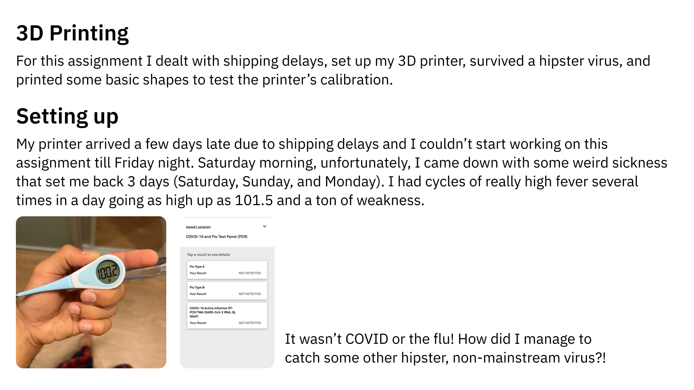
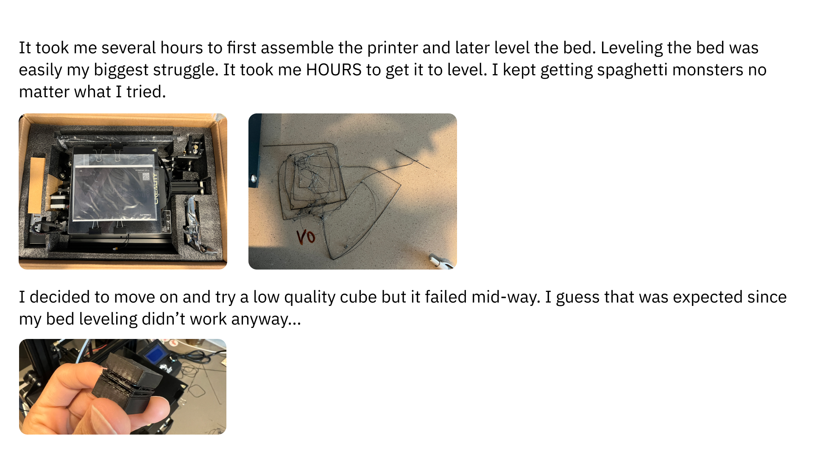
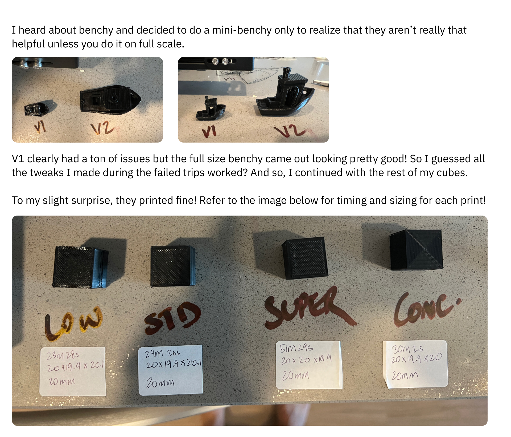
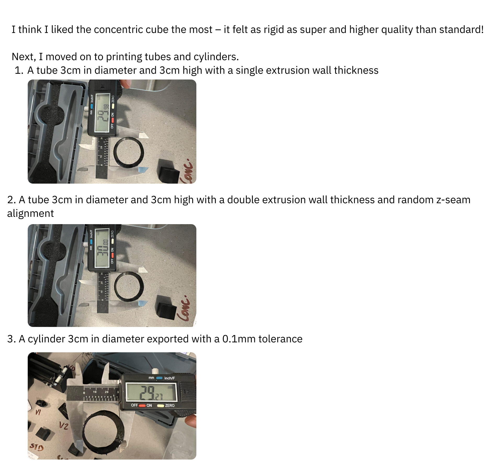
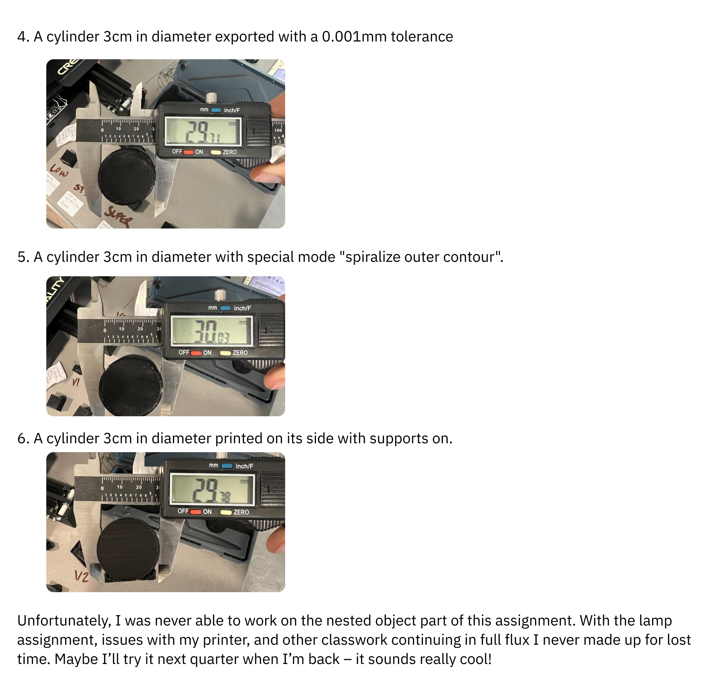

Assignment 3: Finally getting it in





Here's the zip file for this assignment!
Special thanks to Noelle Antignano and Mary Gower for diagnosing that my circlese weren't printing perfectly and that I needed the belt to be tightened. That really helped with the quality of my final's 3D printed molds. Also thanks to Petrina Chan, Vanessa Chien, Annie Lin, and Junchao for helping answer my endless questions about my 3D printer setup and callibration. And finally, thanks to Nadya Peek for accepting this late submission – I really appreciate it!